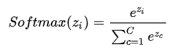
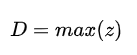
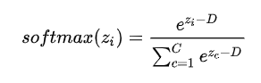
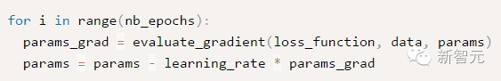
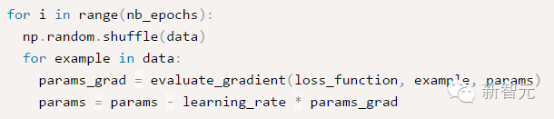
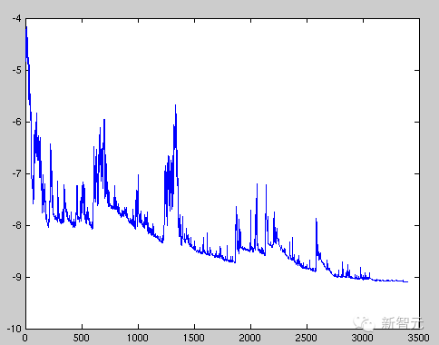
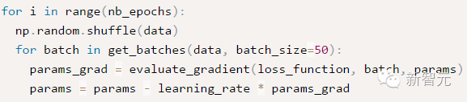

Softmax
https://zhuanlan.zhihu.com/p/105722023
softmax=soft+max
soft相对于hard，hardmax即一组数据的最大值，引入soft为引入了置信度（概率值）

其中 为第 i 个节点的输出值，C 为输出节点的个数，即分类的类别个数。通过 Softmax 函数就可以将多分类的输出值转换为范围在 [0, 1] 和为 1 的概率分布。经过使用指数形式的 Softmax 函数能够将差距大的数值距离拉的更大。但是也带来了缺点，当
值非常大的话，计算得到的数值也会变的非常大，数值可能会溢出。
当然针对数值溢出有其对应的优化方法，将每一个输出值减去输出值中最大的值。


梯度下降
https://www.sohu.com/a/131923387_473283
批量梯度下降 (Batch gradient descent)
每次使用全量的训练集样本来更新模型参数，即： θ=θ−η⋅∇θJ (θ)
其代码如下：

epochs 是用户输入的最大迭代次数。通过上诉代码可以看出，每次使用全部训练集样本计算损失函数 loss_function 的梯度 params_grad，然后使用学习速率 learning_rate 朝着梯度相反方向去更新模型的每个参数 params。一般各现有的一些机器学习库都提供了梯度计算 api。如果想自己亲手写代码计算，那么需要在程序调试过程中验证梯度计算是否正确。
批量梯度下降每次学习都使用整个训练集，因此其优点在于每次更新都会朝着正确的方向进行，最后能够保证收敛于极值点 (凸函数收敛于全局极值点，非凸函数可能会收敛于局部极值点)，但是其缺点在于每次学习时间过长，并且如果训练集很大以至于需要消耗大量的内存，并且全量梯度下降不能进行在线模型参数更新。
随机梯度下降(Stochastic gradient descent)
随机梯度下降算法每次从训练集中随机选择一个样本来进行学习，即： θ=θ−η⋅∇θJ(θ;xi;yi)
批量梯度下降算法每次都会使用全部训练样本，因此这些计算是冗余的，因为每次都使用完全相同的样本集。而随机梯度下降算法每次只随机选择一个样本来更新模型参数，因此每次的学习是非常快速的，并且可以进行在线更新。
其代码如下：

随机梯度下降最大的缺点在于每次更新可能并不会按照正确的方向进行，因此可以带来优化波动 (扰动)，如下图：

图 1 SGD 扰动
不过从另一个方面来看，随机梯度下降所带来的波动有个好处就是，对于类似盆地区域（即很多局部极小值点）那么这个波动的特点可能会使得优化的方向从当前的局部极小值点跳到另一个更好的局部极小值点，这样便可能对于非凸函数，最终收敛于一个较好的局部极值点，甚至全局极值点。
由于波动，因此会使得迭代次数（学习次数）增多，即收敛速度变慢。不过最终其会和全量梯度下降算法一样，具有相同的收敛性，即凸函数收敛于全局极值点，非凸损失函数收敛于局部极值点。
小批量梯度下降 (Mini-batch gradient descent)
Mini-batch 梯度下降综合了 batch 梯度下降与 stochastic 梯度下降，在每次更新速度与更新次数中间取得一个平衡，其每次更新从训练集中随机选择 m,m<n 个样本进行学习，即：
θ=θ−η⋅∇θJ(θ;xi:i+m;yi:i+m)
其代码如下：

相对于随机梯度下降，Mini-batch 梯度下降降低了收敛波动性，即降低了参数更新的方差，使得更新更加稳定。相对于全量梯度下降，其提高了每次学习的速度。并且其不用担心内存瓶颈从而可以利用矩阵运算进行高效计算。一般而言每次更新随机选择 [50,256] 个样本进行学习，但是也要根据具体问题而选择，实践中可以进行多次试验，选择一个更新速度与更次次数都较适合的样本数。mini-batch 梯度下降可以保证收敛性，常用于神经网络中。